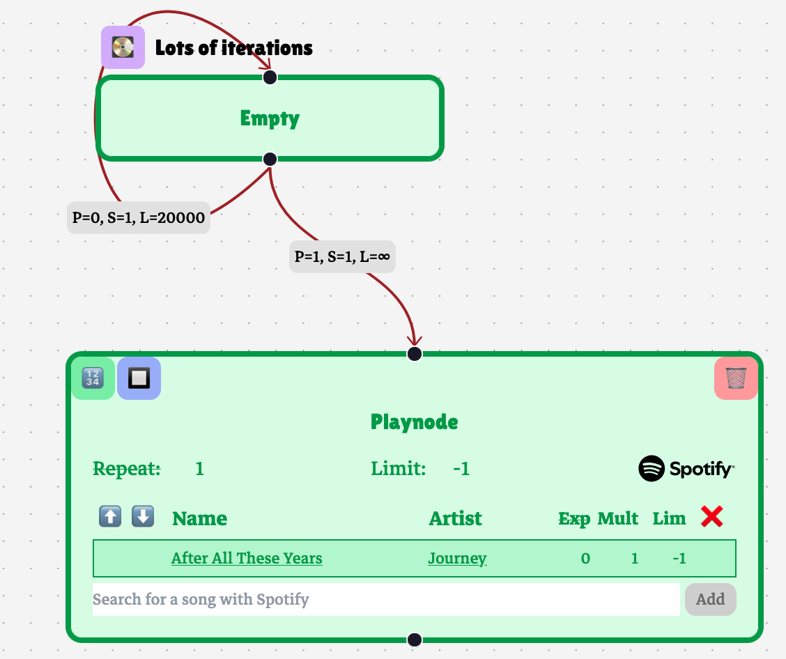

The rules that govern playback on a playtree are rather complicated. The user can play and pause audio, skip forward, go back to previously played songs, which must be memoized when playback randomly branches. Additionally, a user can switch between playheads, which loads/reloads a full playback context.
I use a reducer to handle playback logic. A reducer is a pure function which takes a state and an action and returns a state. Actions are dispatched as a response to UI events and external state changes, prompting an internal state update according to the reducer function. This provides a clean way to manage the logic of complex state updates.
The reducers handle transitions from one song to the next. When a song ends or if the user skips forward, a new song is selected either by moving through a playnode or by randomly selecting the next playnode according to the playedge rules.
A history stack is maintained on each playhead, which holds a reference to previously visited playnodes and playedges, and a copy of old play counters. A node in the history stack is meant to fully capture the playback context at a playhead in a given iteration.
Playscopes are preprocessed, so that they are ordered by specificity. Every playnode is placed in a map that maps to its most specific playscope. This way, playscopes can be compared when playback travels between two playnodes. As playback navigates the playtree graph, counters within a playscope are reset whenever their playscope is exited.
If a playnode has reached its play limit, or if it has no songs, playback will iteratively skip forward and try to find a song to play. As far as the user is concerned, this happens instantaneously: there should be almost no perceivable time between songs, no matter how many playnodes are skipped over in between. This introduces the possibility of an overrun. In a real-time system where computation is meant to be punctuated by breaks (in this case, waiting for a song to finish), an overrun occurs when an intermediary task runs for too long before completing (i.e., finding a new song to play). In Playtree, an overrun condition is easily introduced by a playnode which has no songs and loops infinitely. If unchecked, this overrun condition can cause problems like crashing, freezing, or stalling.
In order to prevent overrun conditions, I incorporate a loop counter. If a song is not found within 10,000 iterations of node traversal, playback resets to the beginning of a playnode. This, of course, means that certain otherwise valid playtrees won’t work as expected when considered in ideal conditions:

We’d expect this playtree to loop the empty playnode 20,000 times and then play “After All These Years.” Instead, the playtree’s playhead will reset without playing anything.
In theory, there is a way to check whether there is an empty cycle analytically, prune the infinite empty cycles, and skip the iterative process for finite empty cycles. However, it’s difficult to get right, and the specifics of the algorithm are subject to change if new features are added to playtree which can affect playback. Such an analytical test might be incorporated when Playtree is definitely feature-complete.
In the meantime, a play counter of 10,000 works for most purposes.